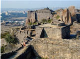
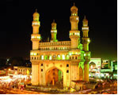
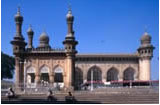
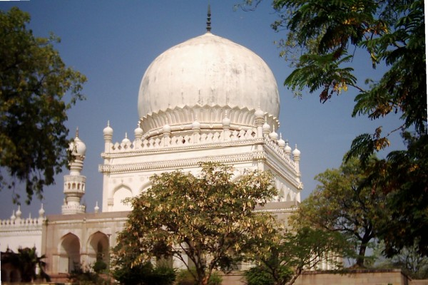
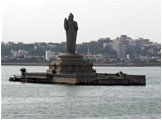
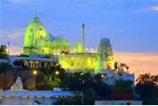

Hyderabad is the capital of the state of Andhra Pradesh, and is the fifth largest city in India. Secunderabad is a twin city of Hyderabad and is separated by the Hussain Sagar (locally well known as Tank Bund), an artificial lake constructed in 1562 A.D. The city is nearly 400 years old and is noted for its natural beauty, mosques and minarets, bazaars and bridges, hills and lakes. It is perched on the top of the Deccan Plateau, 1776 ft. above sea level, and sprawls over an area of 100 Sq. miles. Hyderabad is famous for its architecture, cuisine, pickles, and pearls. It is considered to be at cross-roads between the North and the South,the historical and the modern. The Islamic influences of the Nawabs are visible even today in the cuisine and architecture, especially in the older sections of the city, while expanding suburbs are very cosmopolitan.
A multitude of influences have shaped the character of the city and it has a distinct culture. Its palaces and buildings, houses and tenements, gardens and streets have a history and an architectural individuality of their own, which make Hyderabad a city steeped in culture. Hyderabad is also known as Cyberabad, owing to the presence of large number of IT companies. All major IT companies from across the globe have marked their presence in Hyderabad by having their offices, development centers, or research centers located there.
When in Hyderabad, shopping for pearls is a must - City of Pearls is one of the many sobriquets of Hyderabad . Another must try in Hyderabad is the biriyani, a flavorful and fragrant rice dish. Pulla Reddy and Rami Reddy are famous sweet vendors which are worth checking out. A visit to the Charminar and the surrounding maze of markets is an experience of a lifetime. Be sure to bargain for clothes, ethnic accessories, jewellery (especially pearls and bangles), and artefacts from the myriad vendors abounding these bazaars. Some advice to keep in mind while bargaining would be to start at a fourth (or less) of the price quoted, although this may not always apply.
While Telugu is the state language, a knowledge of Urdu, Hindi, or English, is sufficient to get by, in many places within the city. For more information, including transportation details, do check the WikiTravel entry on Hyderabad.
Map
A Google Map of Hyderabad with prominent places marked can be found here
View miyapur to Kompalli in a larger map
Climate, Weather and Local time
- Local Time-Indian Standard Time (+0530 GMT)
- Summer Temperature-25oC to 40oC
- Winter Temperature-11oC to 25oC
- Annual Rainfall-400 mm to 2,500 mm
Famous Historical Sites






The following websites can help find more information about Hyderabad.